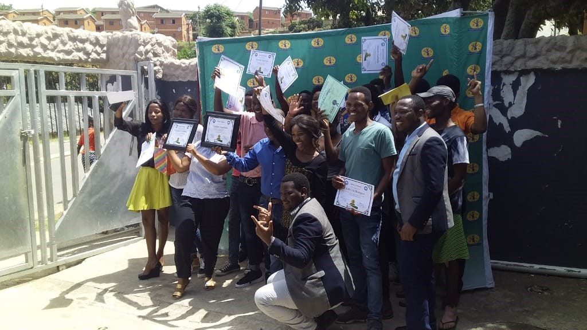
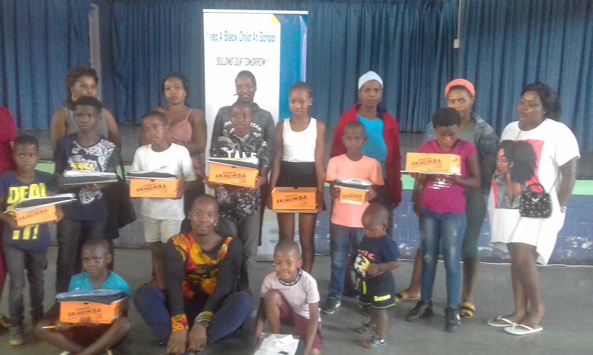
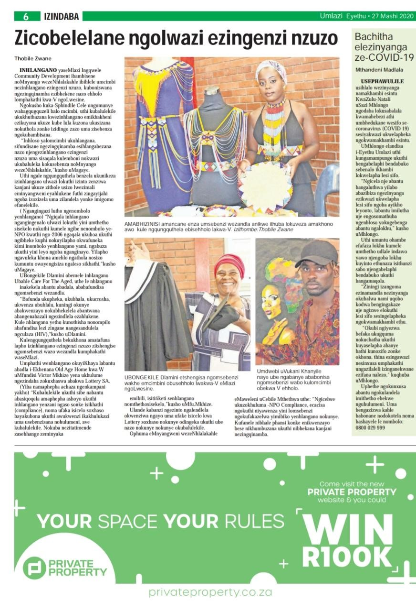

Love Education Day
Usually, on the 12th of February every year, Ingqwele celebrate its occasion that is called ‘Love Education Day’ where students who come from indigence are given calculators, school uniforms and stationeries. On such occasions, students are not only advised to pursue careers that only require Mathematics and Physical Sciences, but also those that are well in-synch with their personalities. It is unwise to coerce a person into selecting a career that s/he does not even like. That is like asking a person who has no fingers to play a guitar. In so doing, we are of view that we are contributing into making a better South Africa with educated bureaucrats. Students who passed their matric are given registration fees as a symbol of showing appreciation and thanking them for the way they performed during their final examinations. This helps in reducing the number of matriculates who passed from staying at home due to being unable to pay registration fees.
1 / 3

The award that were given to learners that performed exceptionally well in mathematics and physical science.
2 / 3

The training by the youth for CV writing and job readiness and the reward of certificates
3 / 3

We organised a programme to donate to orphan children with the belief that education can change their living conditions
❮
❯
Difficulties of having no working material

These are the difficulties that students who really need assistance face during the times they are with us. There are no proper chalkboards, only cardboards that aren’t adequate enough for even a single equation to fit. Though circumstances like this makes some students lose interest in coming to get help, there are some who still bear with us and does not let this be a hindrance to their education because they know what they want for their futures. We are optimistic that someday we will have enough equipment that we need in order to make this project successful. In the previous year, we produced one of the best students in the province using this cardboard as our chalkboard. So I believe that if we can get proper chalkboards and other material that we need we can produce more people who pass with excellent results through hard work.

This above article shows the workshop that was called Youth NPO Capacity Building Workshop, organised by Ingqwele community development organisation where by the different sectors of organisations show casing their work and services that they rendering in different communities.
We were invited different stakeholders to link their NPO with their relevant department when they are looking for funding.